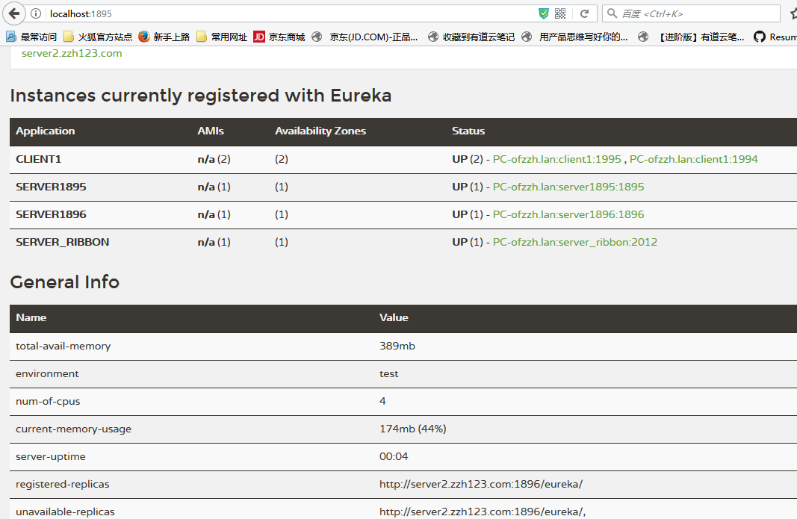
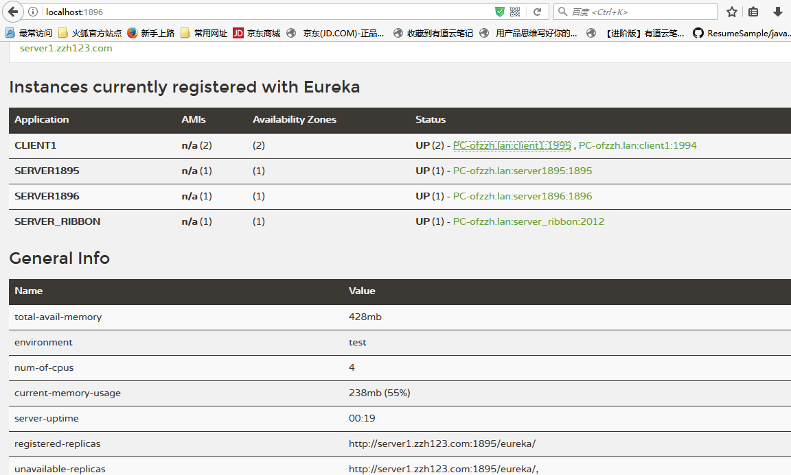
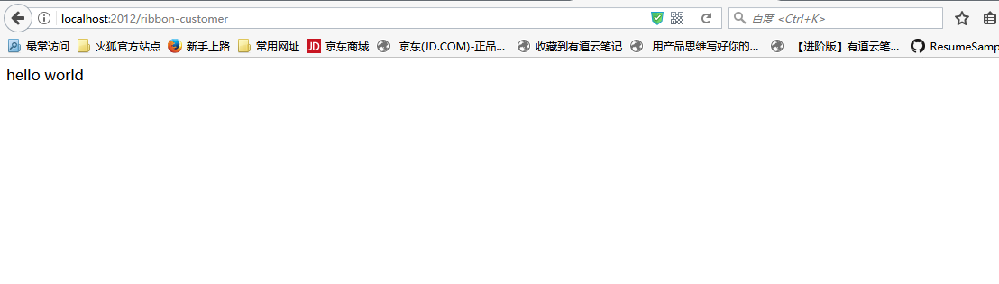

接上回Eureka实现注册中心，这次我们要利用SpringBoot中Ribbon实现服务消费端以及服务端的负载均衡。
1.首先，要启动注册中心，启动多个服务提供端，即上一例中的CLIENT1. 启动的方式可以通过jar的方式启动：1
2java -jar ***.jar --server.port=1994
java -jar ***.jar --server.port=1995
2.新建一个SpringBoot项目，引入web, eureka, ribbon的依赖：1
2
3
4
5
6
7
8
9
10
11
12
13
14
15
16
17
18
19
20
21
22
23
24
25
26
27
28
29
30
31
32
33
34
35
36
37
38
39
40
41
42
43
44
45
46<parent>
<groupId>org.springframework.boot</groupId>
<artifactId>spring-boot-starter-parent</artifactId>
<version>1.5.6.RELEASE</version>
<relativePath/> <!-- lookup parent from repository -->
</parent>
<properties>
<project.build.sourceEncoding>UTF-8</project.build.sourceEncoding>
<project.reporting.outputEncoding>UTF-8</project.reporting.outputEncoding>
<java.version>1.8</java.version>
<spring-cloud.version>Dalston.SR3</spring-cloud.version>
</properties>
<dependencies>
<dependency>
<groupId>org.springframework.cloud</groupId>
<artifactId>spring-cloud-starter-eureka-server</artifactId>
</dependency>
<dependency>
<groupId>org.springframework.cloud</groupId>
<artifactId>spring-cloud-starter-ribbon</artifactId>
</dependency>
<dependency>
<groupId>org.springframework.boot</groupId>
<artifactId>spring-boot-starter-web</artifactId>
</dependency>
<dependency>
<groupId>org.springframework.boot</groupId>
<artifactId>spring-boot-starter-test</artifactId>
<scope>test</scope>
</dependency>
</dependencies>
<dependencyManagement>
<dependencies>
<dependency>
<groupId>org.springframework.cloud</groupId>
<artifactId>spring-cloud-dependencies</artifactId>
<version>${spring-cloud.version}</version>
<type>pom</type>
<scope>import</scope>
</dependency>
</dependencies>
</dependencyManagement>
3.在启动类上加上注册客户端注解，创建调用REST接口的restTemplate实例，@LoadBalanced用来开启负载均衡：1
2
3
4
5
6
7
8
9
10
11
12
13
14
public class DemoRibbonCustomerApplication {
RestTemplate restTemplate(){
return new RestTemplate();
}
public static void main(String[] args) {
SpringApplication.run(DemoRibbonCustomerApplication.class, args);
}
}
4.将消费端注册到注册中心
application.yml配置：1
2
3
4
5
6
7
8
9
10
11server:
port: 2012
eureka:
client:
service-url:
defaultZone: http://sever2.zzh123.com:1896/eureka/,http://server1.zzh123.com:1895/eureka/
spring:
application:
name: server_ribbon
5.编辑控制类，调用服务端接口：1
2
3
4
5
6
7
8
9
10
11
12
public class CustomerController {
RestTemplate restTemplate;
(value = "/ribbon-customer", method = RequestMethod.GET)
public String helloCustomer(){
return restTemplate.getForEntity("http://CLIENT1/",String.class).getBody();
}
}
注意这里是用应用名CLIENT1来进行调用的
6.启动注册中心SERVER1895,SERVER1896，服务提供端CLIENT1(2)，服务消费端SERVER_RIBBON:
SERVER1895,SERVER1896

访问服务消费端server_ribbon：

可以看到调用接口成功，得到了输出hello world
可以看到消费端控制台信息：1
DynamicServerListLoadBalancer for client CLIENT1 initialized: DynamicServerListLoadBalancer:{NFLoadBalancer:name=CLIENT1,current list of Servers=[PC-ofzzh.lan:1896, PC-ofzzh.lan:1895],Load balancer stats=Zone stats: {defaultzone=[Zone:defaultzone; Instance count:2; Active connections count: 0; Circuit breaker tripped count: 0; Active connections per server: 0.0;]
检测到current list of Servers=[PC-ofzzh.lan:1896, PC-ofzzh.lan:1895]两个服务提供者，并且通过轮询达到了负载均衡的效果